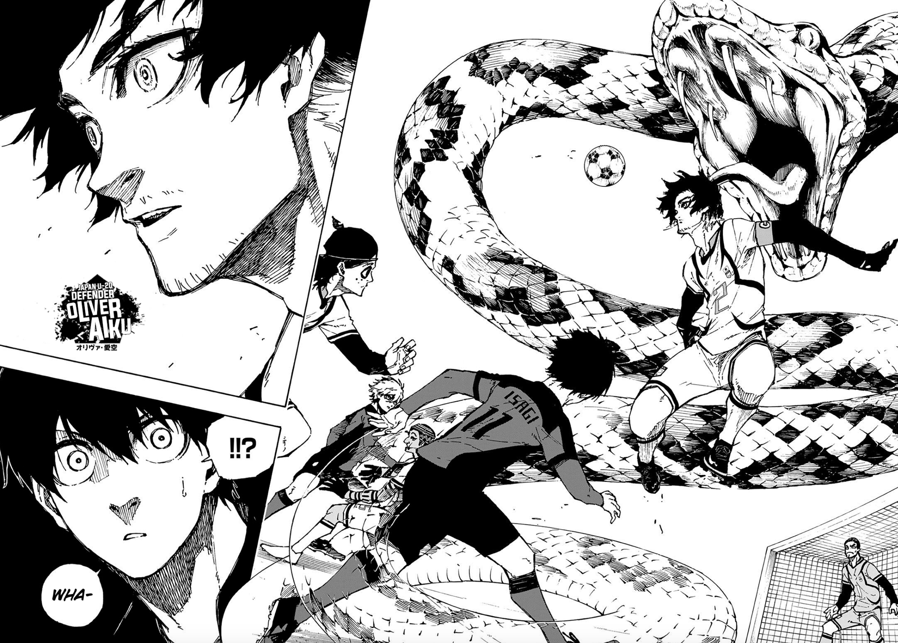

About Aiku
Oliver Aiku is a 19 year old defender who was the captain of the Japan U-20 national team.
Aiku's Characteristics
- He's got a strong body build
- His hair colors are dark purple and light green
- He has heterochromia which the right eye is dark purple and the left eye is light green
Aiku's trivia
Official Blue Lock twitter account has released some trivia information about Aiku. Click on the links to view the original Japanese tweets: